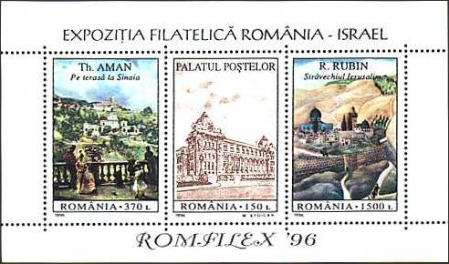
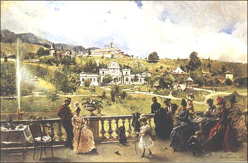

|
The National Museum of Art of Romania On the Terrace at Sinaia |
|

Theodor Aman (1831 - 1891) is one of the most representative Romanian classic painters. Below is presented one his paintings, conserved by the National Museum of Art of Romania, "On the Terrace at Sinaia". This painting appeared in 1996 on a sheet commemorating the first Romanian - Israel Philatelic Exhibition. Just to mention that the first Israel - Romanian Philatelic Exhibition took place in 1993 (Telafila, sheet Sc. 3851) and that the reason for these strong links between both countries is that Israel ranks the second in the world (excepting the former Romanian territories) in what concerns the number of citizens speaking the Romanian language as their mother tongue. Both other paintings shown on the sheet, "The Palace", by Mihai Stoican and "The Old Jerusalem" by Reuven Rubin, belong also to the National Museum of Art.

Despite Aman's strict academic training, the artist was not indifferent to contemporary European trends. He approached every genre of painting. His major accomplishments are in the field of genre painting, one that truly academic painters disregarded. Most of his genre paintings focus on the high life of Bucharest, of which he was a prominent member. To this day they represent a genuine documentary resource for the social life of Romanians a hundred years ago.

Aman
depicted views of Sinaia in a number of paintings. This mountain resort has
become a favorite holiday destination with the local aristocracy, particularly
after the inauguration of the Peles (read Pelesh) royal castle in 1883.
Situated at a distance of only 120 Km from Bucharest, Sinaia and other localities
in proximity of the Bucegi mountains saved and still save from heat the
inhabitants of Bucharest during the hot months of July and August.
The present painting is based on a broad composition
scheme: elegant figures in natural postures fill in the foreground, continued
by an extensive landscape closing with a view of Sinaia monastery and the
Bucegi mountains in the distant background. The two distinct areas of
interest, the fully convincing genre scene on one hand, and the minutely
rendered landscape on the other, benefit from different light treatment, and
lead independent lives. (After Dana Herbay).
For supplementary information please move the mouse pointer over the images.
Links:
Romanian Monastery Art
The Romanian Museum of Art
Princess Roxanda
Romanian frescoes
Balkan women in arts
| Published:
11/09/2001. Revised: 06/11/01. Copyright © 2001 by Victor Manta, Switzerland. All rights reserved worldwide. |
|